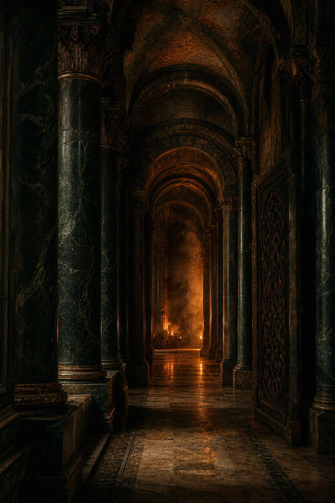
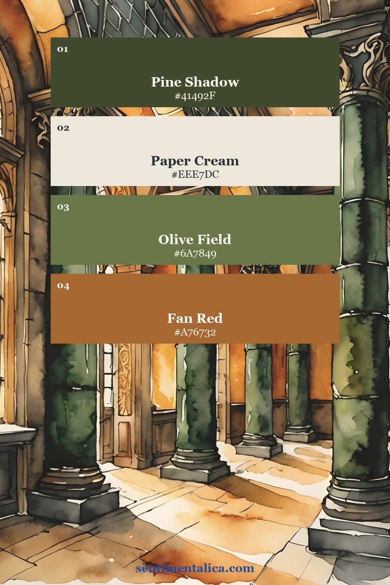
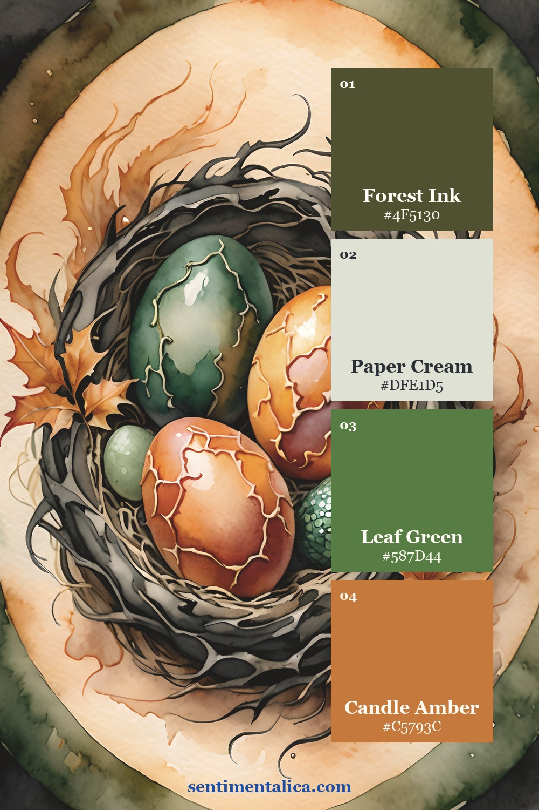
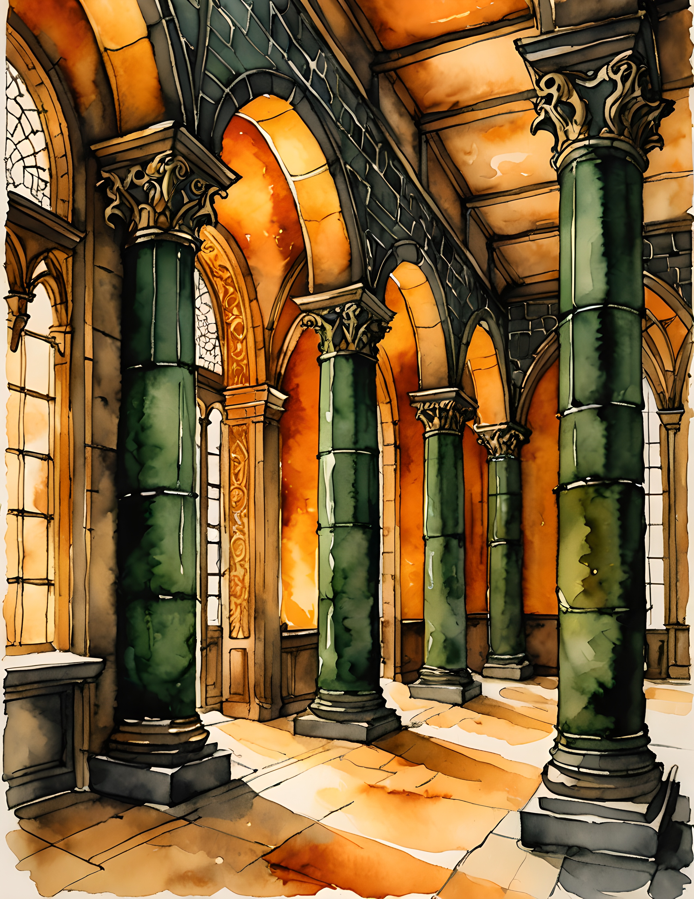
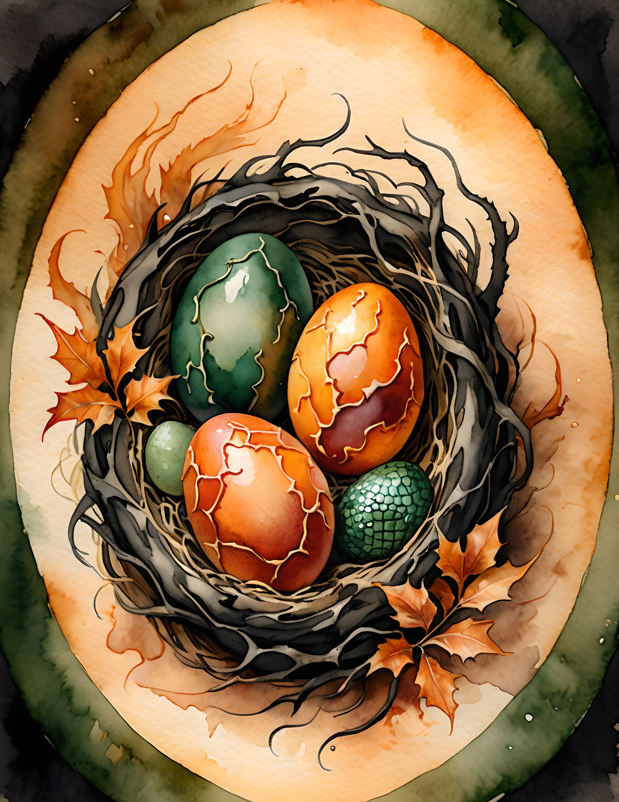
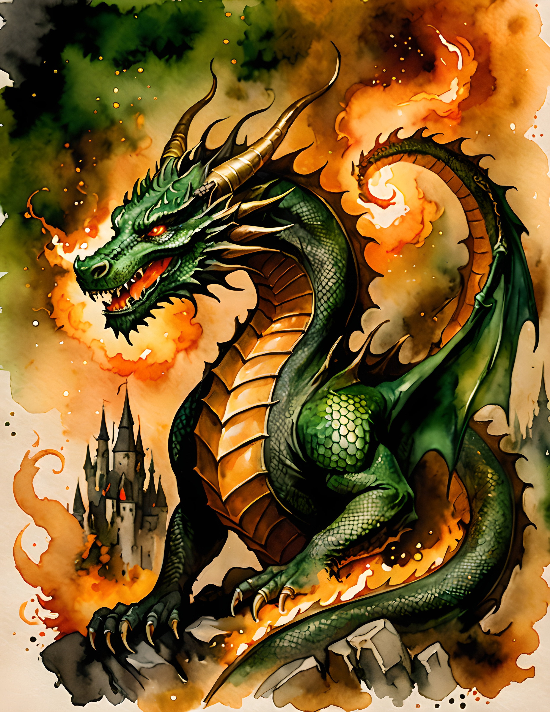

A fantasy junk journal can contain beautiful maps, dramatic colors, and mysterious symbols, yet still feel like a stack of unrelated pages. What makes it feel like a story is not more decoration. It is evidence: repeated clues that suggest something happened before the reader arrived.

You do not need to write a novel or invent a complete kingdom. Start with one sentence that gives the journal a reason to exist. Perhaps it is a traveller’s recovered notebook, a record hidden by a palace archivist, or a field journal kept near a dangerous border. That premise becomes a filter for every choice.
Give every spread one narrative job
- Introduce a place through landscape, architecture, weather, or a route.
- Reveal a person through a note, keepsake, warning, or unfinished message.
- Record an event with a date, mark, damaged edge, or change in color.
- Raise a question by hiding part of the information inside a pocket or fold.
Once a spread has a job, it becomes easier to leave out anything that does not serve it. The result feels richer because the reader understands where to look.

Repeat three clues across the journal
Choose three small motifs that can return in different forms: a color, a shape or mark, and a phrase, date, place name, or initial. A dark thread can cross a pocket and bind a tag several spreads later. A warm accent can appear first as a tiny edge, then dominate near the turning point.

Alternate spectacle with evidence
If every page is dramatic, none feels dramatic. Follow a high-impact image with something quieter: a folded note, torn route, simple inventory, or almost-empty page carrying one sentence. Think in pairs: arrival and aftermath, warning and discovery, firelight and ash, public record and private confession.
Let the writing look handled
Your words do not need to be polished prose. Short fragments often feel more believable in a found journal. Try a supply list with one item crossed out, directions that stop halfway, a description of weather, or a sentence beginning, “We were told never to…”
A five-spread sequence to begin
- The threshold: establish the place and one unanswered question.
- The warning: add a note, rule, damaged sign, or route that should not be taken.
- The encounter: increase the visual intensity but reveal only part of what occurred.
- The aftermath: use a quieter palette, sparse writing, and one repeated clue.
- The unresolved ending: return to the opening motif and leave a pocket containing the final fragment.
Choose a coherent source world
When you want watercolor imagery that belongs to one fantasy setting, the Dragon Fire commercial-use image pack is an optional starting point. Choose one page as the threshold, one for the greatest intensity, and one quieter page for the aftermath. Let those roles guide the journal instead of displaying every image at once.



The most convincing fantasy journals leave space for what is missing. A repeated mark, an interrupted sentence, and a pocket that feels slightly too important can carry more story than a page filled edge to edge. Build the evidence first; the world will appear around it.
Find more slow, practical page ideas in the Sentimentalica journal archive.